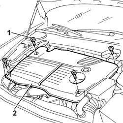

1016A10 SOUND-PROOFING COVER - R.R.
- Path
- Procedures > 10 ENGINE > 1016 CYLINDER HEAD(S) > 1016A TAPPET COVERS > 1016A10 SOUND-PROOFING COVER - R.R.
- Kind
- repair procedure (removal / refitting; the operation number is the code)
- Applies to
- engines: 2.4 JTD 20V; all production periods
- Interactive page
- https://sloeber94.github.io/elrnDB-lThss/en/#/851164
Applies to: engines: 2.4 JTD 20V; all production periods
 Removing
Removing
 Refitting
Refitting- Remove the engine oil filler plug.
1. Undo the bolts fixing the sound-proofing cover.
2. Remove the sound-proofing cover from its housing in the engine.

Applies to: engines: 2.4 JTD 20V; all production periods
Refitting
Removing- Fit the sound-proofing cover in its housing on the cylinder head.
- Tighten the bolts fixing the sound-proofing cover.
- Tighten the engine oil filler plug.
Topics that link to this page (101)
- 0010T20 Engine REFRIGERANT FLUID - Change
- 0010T40 MANUAL GEARBOX OIL - Change
- 1004B18 POWER UNIT with manual gearbox, with front suspension subframe - R.R.
- 1008A42 Power unit RIGID MOUNT - GEARBOX side - R&R
- 1008A44 RIGID REAR power unit MOUNTING - R.R.
- 1008A46 Power unit RIGID MOUNT - TIMING side - R&R
- 1008B10 FLEXIBLE MOUNTING for power unit front support (timing side) - Replace
- 1008B20 Power unit rear support FLEXIBLE MOUNTING - Replace
- 1008B30 Gearbox side mount FLEXIBLE BLOCK/S - Replace
- 1008C10 Power unit REACTION ROD - Replace
- 1008C16 BRACKET on BODY for reaction link - R.R.
- 1016B10 SINGLE CAMSHAFT HOUSING - REPLACE gasket
- 1016C10 SINGLE CYLINDER HEAD - R.R. and Replace gasket
- 1020A20 CRANKCASE SUMP - R.R. clean contact surfaces and apply sealant
- 1020D12 Crankshaft oil seal FRONT COVER - R.R. and Replace seals
- 1020D18 Front crankshaft COVER OIL SEAL - Replace
- 1028H10 CONNECTING ROD and PISTON SET - R&R
- 1032B10 TOOTHED timing BELT - R.R. for timing adjustment or replacement
- 1032B46 TOOTHED DRIVE PULLEY/S - R.R.
- 1032B52 TOOTHED DRIVEN PULLEY (one) - R.R.
- 1032B60 TOOTHED DRIVEN PULLEY - R.R.
- 1032C18 Timing belt MOVING TENSIONER - R.R.
- 1032C32 TIMING BELT FIXED TENSIONER - R.R.
- 1032D12 Timing system protective COVER(S) - R.R.
- 1036L10 CAMSHAFTS in camshaft housing RR includes camshaft housing replacement.
- 1036L30 FRONT OIL SEAL for camshaft housing camshaft - REPLACE
- 1040B42 SUPPLY PIPE from fuel filter to carburettor/injection device - R.R.
- 1044B10 fuel filter assembly - r + r or replace
- 1044B20 fuel filter filtering element - replace
- 1044D10 FUEL HEATER - R.R.
- 1048A10 COMPLETE AIR FILTER -R.R.
- 1048A14 air cleaner filtering element - replace.
- 1048A50 air inlet pipe to turbocharger - r + r
- 1048A56 UPPER RESONATOR - R.R.
- 1048A57 LOWER RESONATOR - R.R.
- 1048B14 air delivery pipe between turbo charger and heat exchanger - replace
- 1048B20 Air supply HOSE from heat exchanger to rigid pipe -Replace
- 1048B44 RIGID air supply PIPE from heat exchanger to intake manifold - R.R.
- 1048B45 RIGID air supply PIPE between heat exchanger and intermediate hose - R.R.
- 1048B50 Air/air HEAT EXCHANGER - R.R.
- 1060E10 PRESSURE PUMP for diesel injection - R.R.
- 1060E30 PRESSURE PUMP drive PULLEY - R.R.
- 1060E40 PRESSURE PUMP SUPPORT - R.R.
- 1060F10 INJECTORS - R.R.
- 1060F20 PIPE from PRESSURE PUMP to FUEL MANIFOLD - R.R.
- 1060F30 SINGLE FUEL MANIFOLD PIPE - R.R.
- 1060F34 PIPE from fuel MANIFOLD to INJEJCTOR - R.R.
- 1060F50 FUEL RETURN MANIFOLD PIPE - R&R
- 1060F52 PIPE from INJECTORS to FUEL RECOVERY MANIFOLD - R&R
- 1060G10 AIR FLOW METER - R.R.
- 1060G14 Engine COOLANT TEMPERATURE SENSOR - R.R.
- 1060G16 PRESSURE RELIEF SENSOR - R.R.
- 1060G22 CAM ANGLE SENSOR - R.R.
- 1060G28 Fuel pressure sensor on fuel manifold - R.R.
- 1060G30 WATER in fuel filter PRESENCE SENSOR - R.R.
- 1060G50 PNEUMATICALLY CONTROLLED THROTTLE CASING - R.R.
- 1060G70 VACUUM RESERVOIR - R.R.
- 1060G72 Solenoid valve on vacuum reservoir for throttle casing pneumatic valve - R.R.
- 1064A24 TURBOCHARGER - EXHAUST MANIFOLD - HOSE CONNECTED TO EXHAUST PIPE - R.R.
- 1072B10 INTAKE MANIFOLD - R.R. and Replace gasket
- 1072C44 Exhaust manifold heat shield on BULKHEAD - R.R.
- 1080C26 MOTOR FOR EGR VALVE SELF-ADJUSTMENT - R.R.
- 1080C74 E.G.R. VALVE - R.R.
- 1080C80 Water/exhaust gas heat exchanger for E.G.R. system - R.R.
- 1080D10 OIL VAPOUR PIPES FROM INTAKE TO SEPARATOR - R.R.
- 1080D14 OIL VAPOUR PIPES FROM SEPARATOR TO INTAKE - R.R.
- 1080D17 PIPE from engine oil vapour separator to filler fitting - R&R
- 1080D34 Engine oil vapour SEPARATOR - R.R.
- 1084A16 Engine oil dip stick PIPE - R.R.
- 1084A22 Engine oil FILLER - R.R.
- 1084B30 CARTRIDGE ENGINE OIL FILTER -R.R.
- 1084B40 Engine oil supply pipe to turbocharger
- 1084C10 Engine oil heat exchanger - R.R.
- 1084C38 Engine oil supply and return pipes to cooling radiator - R.R.
- 1088B10 Engine coolant SUPPLY RESERVOIR - R.R.
- 1088C10 WATER PUMP - R.R.
- 1088C30 THERMOSTAT UNIT - R.R.
- 1088D10 LOWER radaitor coolant outlet HOSE - R.R.
- 1088D14 UPPER radiator coolant inlet HOSE - R.R.
- 1088D24 RIGID PIPE for coolant inlet to water pump - R&R
- 1088E10 Radiator cooling FAN - R.R.
- 1092A10 Crankshaft PULLEY - R.R.
- 1092G10 Engine components single drive BELT - R.R.
- 1092G14 Engine components single belt MOVING TENSIONER - R.R.
- 1092G20 Engine components single belt FIXED TENSIONER - R.R.
- 1092G40 Engine components single belt cam TENSIONER - R.R.
- 1820B20 MASTER CYLINDER (pump) - R.R. and Bleed air
- 1820B40 FLEXIBLE PIPE from clutch reservoir to master cylinder (pump) - R.R. and Bleed air
- 1820B46 SUPPLY PIPE FROM MASTER CYLINDER (PUMP) - R.R.
- 3330C10 MASTER CYLINDER (PUMP) - R.R. - Bleed air from brakes separately
- 3330D24 vacuum pipe for brake servo - r+r
- 3330D30 vacuum pump - r+r
- 4130B20 POWER ASSISTED STEERING PUMP - R.R.
- 4130B32 POWER STEERING - R.R.
- 4130B94 DUPLEX PIPES from cooling coil or heat exchanger radiator - R.R.
- 4410D10 Front suspension FRAME - R.R.
- 5040A20 Air conditioning COMPRESSOR - R.R. - Includes fluid level check and top up if necessary
- 5040A50 PIPE from compressor to air conditioner condenser - R&R
- 5520B10 STARTER MOTOR - R&R
- 5520C10 HEATER PLUGS - R.R.
- 5530A10 ALTERNATOR - R.R.